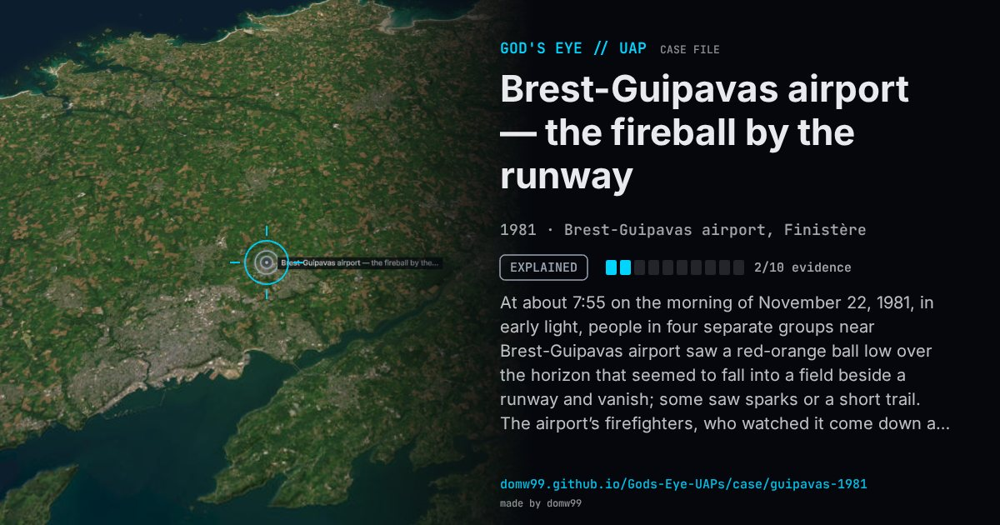

Brest-Guipavas airport — the fireball by the runway

At about 7:55 on the morning of November 22, 1981, in early light, people in four separate groups near Brest-Guipavas airport saw a red-orange ball low over the horizon that seemed to fall into a field beside a runway and vanish; some saw sparks or a short trail. The airport’s firefighters, who watched it come down as if landing, alerted the control tower. The gendarmes, contacted the next day by the air traffic controller, took eight statements and searched; no trace was found. GEPAN’s original file recorded a radar echo at the time, which made the case a class D, unexplained. GEIPAN’s re-examination found that the radar centre had treated the echoes as insignificant and that the controllers had seen nothing abnormal, and reclassified it B: a meteoroid on a grazing path, seen almost head-on.
Explanation
GEIPAN class B: probably a meteoroid entering the atmosphere on a shallow path, seen nearly head-on, which explains the red-orange ball, the short, slow descent and the sudden disappearance. A radar “spot” first cited in the file was not supported: the controllers noted nothing abnormal.
What was seen
Shape: A red-orange ball, low on the horizon, that seemed to drop into a field by the runway
Witnesses: Seven people in four independent groups: joggers, airport firefighters and a man waiting for a bus
Duration: Seconds (15 s or less, by most accounts)
Sources
Browse
- France
- 1980s
- Explained
- Mass sightings
- Official government documents
- Many independent witnesses
- Spheres and orbs